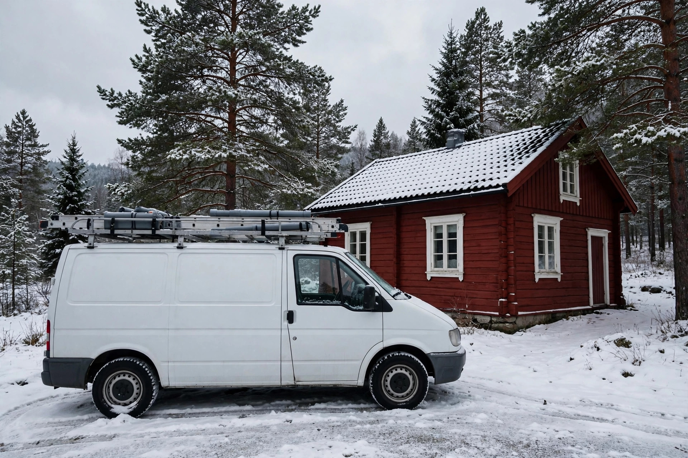

AI-generert demobilde[Foto: Servicebil & utstyr · Bunesvegen 48]Fullt utrustet rørleggerbil
Operativ servicebil med spesialverktøy for vann, sanitær og rørreparasjoner på Sagstua og omegn.
Stasjonering: Bunesvegen 48, Sagstua
Lokal forankring · Sagstua, Nord-Odal
Håndverksbedrift med base i Bunesvegen 48 på Sagstua. Snakk direkte med den som utfører arbeidet.
Teknisk datablad · Virksomhetsdata
Lokal verdiskaping
Direkte kontakt, geografisk nærhet og grundig kjennskap til distriktets tekniske infrastruktur gir trygge og holdbare løsninger.
01
Respons
Vi holder til på Sagstua. Det betyr minimal kjøretid, rask respons og personlig oppfølging i nærområdet uten unødvendige reisetillegg eller lange ventetider.
Base distanse / Sagstua sentrum
02
Regelverk
Vi har inngående erfaring med kommunens tekniske krav til vann, overvann, utslippstillatelser og grunnforhold i distriktet. Dette sikrer at installasjonen tilfredsstiller alle lokale normer.
Kommunal standard / VA-norm Innlandet
03
Byråkrati
Vi tar det formelle ansvaret overfor kommunen ved søknadspliktige avløps- og minirenseanlegg, slik at du slipper byråkratiske bekymringer og sikrer godkjent ferdigattest.
Sluttdokument / Godkjent ferdigattest
Billedokumentasjon & kvalitetssikring
Se utstyr, operativt materiell og standardmessig utførelse fra oppdrag i Nord-Odal. Bildene er AI-genererte demobilder — ekte bilder fra oppdrag legges inn av bedriften.

AI-generert demobilde[Foto: Servicebil & utstyr · Bunesvegen 48]Operativ servicebil med spesialverktøy for vann, sanitær og rørreparasjoner på Sagstua og omegn.
Stasjonering: Bunesvegen 48, Sagstua
 AI-generert demobilde[Foto: Rørlegger under arbeid — demo]
AI-generert demobilde[Foto: Rørlegger under arbeid — demo]Faglig utførelse av tekniske varmesentraler, fordelerskap og rørføringer i bolig og fritidseiendom.
Faglig ledelse: Ole K Toterud
 AI-generert demobilde[Dokumentasjon: VVS-kontroll Innlandet]
AI-generert demobilde[Dokumentasjon: VVS-kontroll Innlandet]Gjennomgang av trykkprøving, sjekklister og FDV-dokumentasjon før formell overlevering.
Kvalitetssikring: Trykkprøving & dokumentasjon
Vi dokumenterer alle utførte installasjoner med teknisk underlag og overlevering.
Trygghet ved fremtidig salg og forsikring
Sentral plassering
Sagstua i Nord-Odal kommune. Rask utkjøring i Sagstua, Sand, Austvatn, Gardvik og Bruvoll.
Lokalt ansvar · Ingen fordyrende mellomledd
Ta kontakt direkte med Ole K Toterud på Sagstua. Vi stiller på befaring og gir en ryddig, fast prisvurdering for arbeidet ditt.